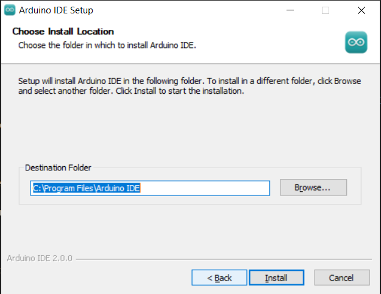
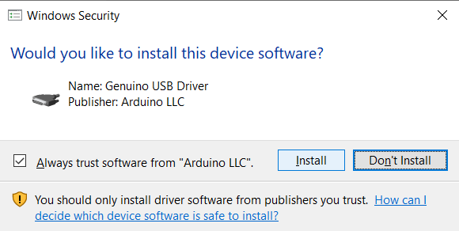

Note
こんにちは、SunFounderのRaspberry Pi & Arduino & ESP32愛好家コミュニティへようこそ！Facebook上でRaspberry Pi、Arduino、ESP32についてもっと深く掘り下げ、他の愛好家と交流しましょう。
参加する理由は？
エキスパートサポート：コミュニティやチームの助けを借りて、販売後の問題や技術的な課題を解決します。
学び＆共有：ヒントやチュートリアルを交換してスキルを向上させましょう。
独占的なプレビュー：新製品の発表や先行プレビューに早期アクセスしましょう。
特別割引：最新製品の独占割引をお楽しみください。
祭りのプロモーションとギフト：ギフトや祝日のプロモーションに参加しましょう。
👉 私たちと一緒に探索し、創造する準備はできていますか？[ここ]をクリックして今すぐ参加しましょう！
Arduino IDE 2.0のダウンロードとインストール
Arduino IDEはArduino Integrated Development Environmentとして知られており、Arduinoプロジェクトを完成させるために必要なソフトウェアのサポートをすべて提供します。これは、Arduinoチームが提供する、Arduino用に特別に設計されたプログラミングソフトウェアであり、Arduinoボードにプログラムを書き込んでアップロードすることができます。
Arduino IDE 2.0はオープンソースのプロジェクトであり、堅牢な前身であるArduino IDE 1.xから大きなステップアップとなっており、リニューアルされたUI、改良されたボード＆ライブラリマネージャ、デバッガ、オートコンプリート機能などが搭載されています。
このチュートリアルでは、Windows、Mac、LinuxのコンピュータにArduino IDE 2.0をダウンロードしてインストールする方法を紹介します。
要件
Windows - Win 10以上、64ビット
Linux - 64ビット
Mac OS X - バージョン10.14：「Mojave」以上、64ビット
Arduino IDE 2.0のダウンロード
Arduino IDE 2.0.0 Page を訪問してください。
お使いのOSバージョンのIDEをダウンロードしてください。
インストール
Windows
ダウンロードした
arduino-ide_xxxx.exeファイルをダブルクリックして実行します。ライセンス契約を読み、同意します。

インストールオプションを選択します。
インストール場所を選択します。ソフトウェアはシステムドライブ以外のドライブにインストールすることをおすすめします。
その後、完了します。

macOS
ダウンロードした arduino_ide_xxxx.dmg ファイルをダブルクリックし、指示に従って Arduino IDE.app を Applications フォルダにコピーします。数秒後にArduino IDEが正常にインストールされたことが確認できます。

Linux
LinuxシステムでArduino IDE 2.0をインストールするチュートリアルは、以下のリンクを参照してください：https://docs.arduino.cc/software/ide-v2/tutorials/getting-started/ide-v2-downloading-and-installing#linux
IDEの起動
Arduino IDE 2.0を初めて開くと、Arduino AVR Boards、組み込みライブラリ、および他の必要なファイルが自動的にインストールされます。

さらに、ファイアウォールやセキュリティセンターが何度かポップアップして、デバイスドライバをインストールするかどうかを尋ねてくるかもしれません。すべてのドライバをインストールしてください。
これで、あなたのArduino IDEが準備完了です！
Note
ネットワークの問題やその他の理由で一部のインストールが完了しなかった場合、Arduino IDEを再度開くと、残りのインストールが完了します。すべてのインストールが完了した後、VerifyまたはUploadをクリックしない限り、Outputウィンドウは自動的に開きません。